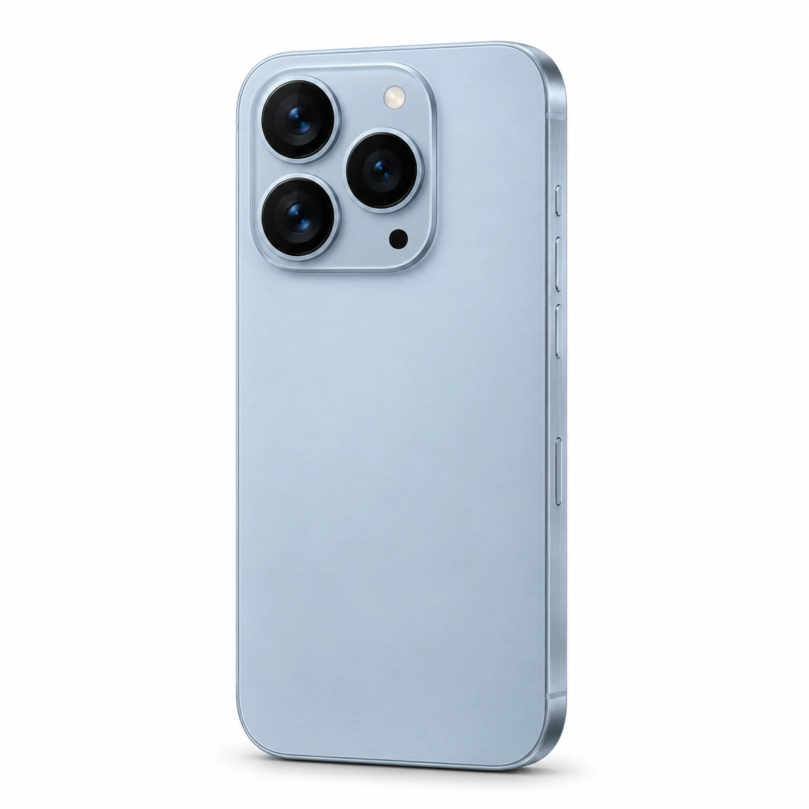
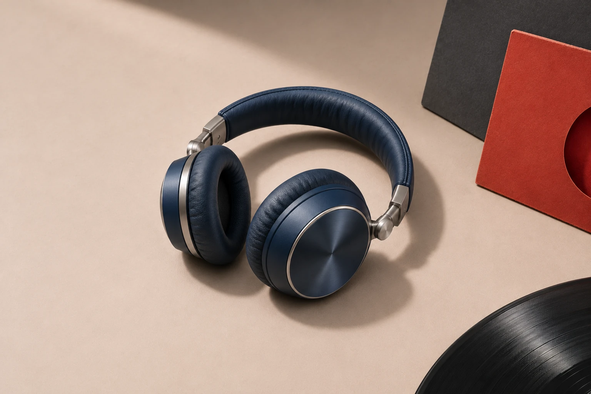

不止一个工具，是你的内容工厂
用 AI 文生图
与文生视频  ，
，
让每个电商人拥有自己的内容工厂。
不必在设计、文案和视频工具之间来回奔波。
把想法交给飞马，把时间留给商品和生意。
打开你的创作工具箱
从出图到出片，从新手到老手。
FEIMA / CREATIVE KIT五大能力，
01 / 文生图好商品，五大能力，
一起开工。
值得好画面。 02 / 文生视频让卖点
动起来。 03 / 双工作台你的节奏，
你的工作台。 04 / 玲玲陪练不会？
我陪你。
 05 / 多场景素材一套内容，
05 / 多场景素材一套内容，更多可能。
同一件商品，不止一种表达
上传的商品原图 主图 / 让商品成为焦点 
详情 / 看得见的质感

商品故事 / 从卖点到分镜01—03
开场吸引卖点展开行动引导
03 双工作台
专业与小白，
各得其法。
刚开始，就一步步来。已经熟练，就按自己的节奏创作。复杂的能力，也可以有简单的入口。
说需求、选风格、看成果，每一步都有清楚的引导。
玲
先说说你想卖什么？
告诉我商品和卖点，我们从这里开始。
手机 · 通勤场景
简洁背景 / 突出质感 / 适合主图
创作方向描述商品，开启你的创作
把复杂的 AI 流程，收进清楚的每一步。
玲玲 / 你的 AI 创作陪练05 多场景素材
一件商品，
在每个场景亮眼登场。
从店铺主图到内容种草，
为不同表达，准备合适的素材。
简单四步，开始你的第一份作品
从“我想卖”，
到“这样卖”。
- 01
说需求
告诉飞马商品和卖点。
一句想法，就是起点。 - 02
定方向
挑风格、定内容。
让创作贴合你的商品。 - 03
出内容
文案、图片、视频。
把想法变成作品。 - 04
去展示
整理并下载成果。
为店铺和内容准备素材。
每一种电商生意，都有自己的节奏
找到你的主场。
不管你从哪里起步，
都能找到适合自己的创作方式。
